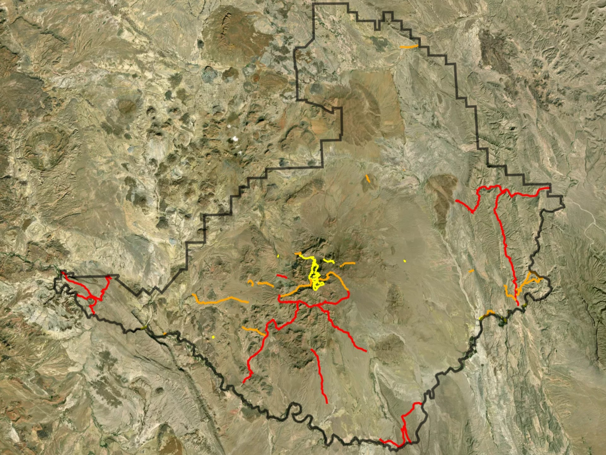

Master of Science in Geospatial Technologies
Project Portfolio
Kilauea Volcano, Big Island of Hawai'i
Hazards in Hawai'i Capstone
UWT 2021-2022 Bachelor Degrees Granted
'Save the Reef' Counter Map

Bike Racks in Cambridge, Massachusetts

Trails in Big Bend National Park
Libraries and Hospitals in Pierce County, Washington
Crack Team data collection tool
Earthquakes in the past 24 hours
Capstone Abstract
As the world erupts, floods, and finds ways to change under our feet, hazardous events pose a threat to human life and properties, creating vulnerability in affected communities.
Unfortunately, some communities do not have the proper hazard education resources that allows them to gain hazard awareness.
When an event occurs, these communities are left unprepared and overwhelmed with feelings of panic, fear, and worry, hoping to find a sense of safety when a hazardous event occurs.
Understanding the surrounding hazards allows individuals to be prepared for these events, making them feel safer as they can acknowledge what the event means, how to respond based on personal risk, and how to recover.
By using GIS applications, hazard assessment datasets, and historical hazardous event records provided by the Hawaii GIS Program, the project created will be an application that allows community members of the Hawaiian Islands to insert a location onto a map and learn about their local hazards.
The hazard assessments included will showcase their locations’ history and current susceptibility to flooding, tsunamis, fires, and lava flows in the future.
As a result of using this platform, the community will increase their knowledge to create hazard awareness and by doing so, help them become further prepared for their local hazardous events moving forward.
The less damage a hazard can cause to your personal preparedness, the easier recovery from the hazard will be.
Academics
Intro to Geospatial Technology
Web-Based GIS
GIS Customization and Automation
Mobile Geospatial Application Development
Environmental Planning Applications
Cartography & Data Visualization
Practicum I: Planning and Design
Practicum II: Implementation
Graduation
Hooding Ceremony
August 10, 2023 at 5:30pm
Graduation Ceremony
June 9, 2023 at 10:00am